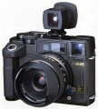

器材库 > 120中幅相机 > RF645

规格总览
产品类型
6x4.5 画幅旁轴取景照相机，镜间快门、可更换镜头
发布日期
2000-09-20
厂家推荐价格
155,000.00 （日元）
标称画幅
6 x 4.5cm
实际画幅
56 x 41.5mm
停产
是
取景规格
取景放大倍率
0.6倍
取景器信息
快门速度、光圈值、曝光模式、AE锁定指示(显示L)、自拍倒计时、 闪光灯充电完毕、多重曝光指示、电池状态等
镜头和对焦
镜头卡口
Bronica RF
标准镜头
Zenzanon-RF45/4(配专用取景器), Zenzanon-RF65/4, Zenzanon-RF135/4.5
对焦
手动螺纹对焦系统
曝光控制
测光系统
外测光
测光范围
3EV~18EV
曝光补偿
±2EV以1/2EV级调整
多重曝光
有
自动曝光锁
有
ISO感光度
25-1600
快门
No. 00 号镜间快门
快门速度
M：B, 1~1/500秒, 1EV级调节；光圈优先AE：8~1/500秒, 1/12EV级调节；P：8~1/750秒, 1/12EV级调节
自拍
10秒, 可中途取消
过片系统
过片
手动扳手过片
其它规格
接口
PC端子, 热靴, 快门线插孔
电池
2枚6V锂电池（CR2）
机身尺寸
145.6 × 107.3 × 64mm
机身重量
810g
nikonjeep2011-07-01 11:084.67 分
操作性 5.00功能性 5.00美观性 5.00趣味性 4.50耐用性 4.50性价比 4.00
levinson2008-01-07 22:414.5 分
操作性 4.50功能性 4.50美观性 4.50趣味性 4.50耐用性 4.00性价比 5.00
ranger0192007-02-15 21:074.83 分
操作性 5.00功能性 5.00美观性 4.50趣味性 4.50耐用性 5.00性价比 5.00
forest9898_cn2005-11-08 10:164.92 分
操作性 4.50功能性 5.00美观性 5.00趣味性 5.00耐用性 5.00性价比 5.00
茶当酒2005-04-03 20:324.92 分
操作性 5.00功能性 5.00美观性 5.00趣味性 5.00耐用性 4.50性价比 5.00
magicpig2002-08-16 11:234.58 分
操作性 5.00功能性 5.00美观性 5.00趣味性 4.00耐用性 4.00性价比 4.50
产品图 / 样片
RF645机身+45/4镜头
评测 / 相关文章
该产品暂无存档的评测文章